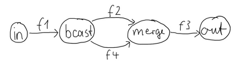

Working with Graphs
Dependency
To use Akka Streams, add the module to your project:
- sbt
libraryDependencies += "com.typesafe.akka" %% "akka-stream" % "2.6.4"- Maven
<dependency> <groupId>com.typesafe.akka</groupId> <artifactId>akka-stream_2.12</artifactId> <version>2.6.4</version> </dependency>- Gradle
dependencies { compile group: 'com.typesafe.akka', name: 'akka-stream_2.12', version: '2.6.4' }
Introduction
In Akka Streams computation graphs are not expressed using a fluent DSL like linear computations are, instead they are written in a more graph-resembling DSL which aims to make translating graph drawings (e.g. from notes taken from design discussions, or illustrations in protocol specifications) to and from code simpler. In this section we’ll dive into the multiple ways of constructing and re-using graphs, as well as explain common pitfalls and how to avoid them.
Graphs are needed whenever you want to perform any kind of fan-in (“multiple inputs”) or fan-out (“multiple outputs”) operations. Considering linear Flows to be like roads, we can picture graph operations as junctions: multiple flows being connected at a single point. Some operators which are common enough and fit the linear style of Flows, such as concat (which concatenates two streams, such that the second one is consumed after the first one has completed), may have shorthand methods defined on Flow or Source themselves, however you should keep in mind that those are also implemented as graph junctions.
Constructing Graphs
Graphs are built from simple Flows which serve as the linear connections within the graphs as well as junctions which serve as fan-in and fan-out points for Flows. Thanks to the junctions having meaningful types based on their behavior and making them explicit elements these elements should be rather straightforward to use.
Akka Streams currently provide these junctions (for a detailed list see the operator index):
-
Fan-out
Broadcast[T]Broadcast<T>– (1 input, N outputs) given an input element emits to each outputBalance[T]Balance<T>– (1 input, N outputs) given an input element emits to one of its output portsUnzipWith[In,A,B,...]UnzipWith<In,A,B,...>– (1 input, N outputs) takes a function of 1 input that given a value for each input emits N output elements (where N <= 20)UnZip[A,B]UnZip<A,B>– (1 input, 2 outputs) splits a stream of(A,B)Pair<A,B>tuples into two streams, one of typeAand one of typeB
-
Fan-in
Merge[In]Merge<In>– (N inputs , 1 output) picks randomly from inputs pushing them one by one to its outputMergePreferred[In]MergePreferred<In>– likeMergebut if elements are available onpreferredport, it picks from it, otherwise randomly fromothersMergePrioritized[In]MergePrioritized<In>– likeMergebut if elements are available on all input ports, it picks from them randomly based on theirpriorityMergeLatest[In]MergeLatest<In>– (N inputs, 1 output) emitsList[In], when i-th input stream emits element, then i-th element in emitted list is updatedZipWith[A,B,...,Out]ZipWith<A,B,...,Out>– (N inputs, 1 output) which takes a function of N inputs that given a value for each input emits 1 output elementZip[A,B]Zip<A,B>– (2 inputs, 1 output) is aZipWithspecialised to zipping input streams ofAandBinto a(A,B)Pair(A,B)tuple streamConcat[A]Concat<A>– (2 inputs, 1 output) concatenates two streams (first consume one, then the second one)
One of the goals of the GraphDSL DSL is to look similar to how one would draw a graph on a whiteboard, so that it is simple to translate a design from whiteboard to code and be able to relate those two. Let’s illustrate this by translating the below hand drawn graph into Akka Streams:

Such graph is simple to translate to the Graph DSL since each linear element corresponds to a Flow, and each circle corresponds to either a Junction or a Source or Sink if it is beginning or ending a Flow. Junctions must always be created with defined type parameters, as otherwise the Nothing type will be inferred.
- Scala
-
val g = RunnableGraph.fromGraph(GraphDSL.create() { implicit builder: GraphDSL.Builder[NotUsed] => import GraphDSL.Implicits._ val in = Source(1 to 10) val out = Sink.ignore val bcast = builder.add(Broadcast[Int](2)) val merge = builder.add(Merge[Int](2)) val f1, f2, f3, f4 = Flow[Int].map(_ + 10) in ~> f1 ~> bcast ~> f2 ~> merge ~> f3 ~> out bcast ~> f4 ~> merge ClosedShape }) - Java
-
final Source<Integer, NotUsed> in = Source.from(Arrays.asList(1, 2, 3, 4, 5)); final Sink<List<String>, CompletionStage<List<String>>> sink = Sink.head(); final Flow<Integer, Integer, NotUsed> f1 = Flow.of(Integer.class).map(elem -> elem + 10); final Flow<Integer, Integer, NotUsed> f2 = Flow.of(Integer.class).map(elem -> elem + 20); final Flow<Integer, String, NotUsed> f3 = Flow.of(Integer.class).map(elem -> elem.toString()); final Flow<Integer, Integer, NotUsed> f4 = Flow.of(Integer.class).map(elem -> elem + 30); final RunnableGraph<CompletionStage<List<String>>> result = RunnableGraph.fromGraph( GraphDSL // create() function binds sink, out which is sink's out port and builder DSL .create( // we need to reference out's shape in the builder DSL below (in to() // function) sink, // previously created sink (Sink) (builder, out) -> { // variables: builder (GraphDSL.Builder) and out (SinkShape) final UniformFanOutShape<Integer, Integer> bcast = builder.add(Broadcast.create(2)); final UniformFanInShape<Integer, Integer> merge = builder.add(Merge.create(2)); final Outlet<Integer> source = builder.add(in).out(); builder .from(source) .via(builder.add(f1)) .viaFanOut(bcast) .via(builder.add(f2)) .viaFanIn(merge) .via(builder.add(f3.grouped(1000))) .to(out); // to() expects a SinkShape builder.from(bcast).via(builder.add(f4)).toFanIn(merge); return ClosedShape.getInstance(); }));
Junction reference equality defines graph node equality (i.e. the same merge instance used in a GraphDSL refers to the same location in the resulting graph).
Notice the import GraphDSL.Implicits._ which brings into scope the ~> operator (read as “edge”, “via” or “to”) and its inverted counterpart <~ (for noting down flows in the opposite direction where appropriate).
By looking at the snippets above, it should be apparent that the GraphDSL.Builderbuilder object is mutable. It is used (implicitly) by the ~> operator, also making it a mutable operation as well. The reason for this design choice is to enable simpler creation of complex graphs, which may even contain cycles. Once the GraphDSL has been constructed though, the GraphDSLRunnableGraph instance is immutable, thread-safe, and freely shareable. The same is true of all operators—sources, sinks, and flows—once they are constructed. This means that you can safely re-use one given Flow or junction in multiple places in a processing graph.
We have seen examples of such re-use already above: the merge and broadcast junctions were imported into the graph using builder.add(...), an operation that will make a copy of the blueprint that is passed to it and return the inlets and outlets of the resulting copy so that they can be wired up. Another alternative is to pass existing graphs—of any shape—into the factory method that produces a new graph. The difference between these approaches is that importing using builder.add(...) ignores the materialized value of the imported graph while importing via the factory method allows its inclusion; for more details see Stream Materialization.
In the example below we prepare a graph that consists of two parallel streams, in which we re-use the same instance of Flow, yet it will properly be materialized as two connections between the corresponding Sources and Sinks:
- Scala
-
val topHeadSink = Sink.head[Int] val bottomHeadSink = Sink.head[Int] val sharedDoubler = Flow[Int].map(_ * 2) RunnableGraph.fromGraph(GraphDSL.create(topHeadSink, bottomHeadSink)((_, _)) { implicit builder => (topHS, bottomHS) => import GraphDSL.Implicits._ val broadcast = builder.add(Broadcast[Int](2)) Source.single(1) ~> broadcast.in broadcast ~> sharedDoubler ~> topHS.in broadcast ~> sharedDoubler ~> bottomHS.in ClosedShape }) - Java
-
final Sink<Integer, CompletionStage<Integer>> topHeadSink = Sink.head(); final Sink<Integer, CompletionStage<Integer>> bottomHeadSink = Sink.head(); final Flow<Integer, Integer, NotUsed> sharedDoubler = Flow.of(Integer.class).map(elem -> elem * 2); final RunnableGraph<Pair<CompletionStage<Integer>, CompletionStage<Integer>>> g = RunnableGraph.<Pair<CompletionStage<Integer>, CompletionStage<Integer>>>fromGraph( GraphDSL.create( topHeadSink, // import this sink into the graph bottomHeadSink, // and this as well Keep.both(), (b, top, bottom) -> { final UniformFanOutShape<Integer, Integer> bcast = b.add(Broadcast.create(2)); b.from(b.add(Source.single(1))) .viaFanOut(bcast) .via(b.add(sharedDoubler)) .to(top); b.from(bcast).via(b.add(sharedDoubler)).to(bottom); return ClosedShape.getInstance(); }));
In some cases we may have a list of graph elements, for example if they are dynamically created. If these graphs have similar signatures, we can construct a graph collecting all their materialized values as a collection:
- Scala
-
val sinks = immutable .Seq("a", "b", "c") .map(prefix => Flow[String].filter(str => str.startsWith(prefix)).toMat(Sink.head[String])(Keep.right)) val g: RunnableGraph[Seq[Future[String]]] = RunnableGraph.fromGraph(GraphDSL.create(sinks) { implicit b => sinkList => val broadcast = b.add(Broadcast[String](sinkList.size)) Source(List("ax", "bx", "cx")) ~> broadcast sinkList.foreach(sink => broadcast ~> sink) ClosedShape }) val matList: Seq[Future[String]] = g.run() - Java
-
// create the source final Source<String, NotUsed> in = Source.from(Arrays.asList("ax", "bx", "cx")); // generate the sinks from code List<String> prefixes = Arrays.asList("a", "b", "c"); final List<Sink<String, CompletionStage<String>>> list = new ArrayList<>(); for (String prefix : prefixes) { final Sink<String, CompletionStage<String>> sink = Flow.of(String.class) .filter(str -> str.startsWith(prefix)) .toMat(Sink.head(), Keep.right()); list.add(sink); } final RunnableGraph<List<CompletionStage<String>>> g = RunnableGraph.fromGraph( GraphDSL.create( list, (GraphDSL.Builder<List<CompletionStage<String>>> builder, List<SinkShape<String>> outs) -> { final UniformFanOutShape<String, String> bcast = builder.add(Broadcast.create(outs.size())); final Outlet<String> source = builder.add(in).out(); builder.from(source).viaFanOut(bcast); for (SinkShape<String> sink : outs) { builder.from(bcast).to(sink); } return ClosedShape.getInstance(); })); List<CompletionStage<String>> result = g.run(system);
Constructing and combining Partial Graphs
Sometimes it is not possible (or needed) to construct the entire computation graph in one place, but instead construct all of its different phases in different places and in the end connect them all into a complete graph and run it.
This can be achieved by returning a different Shape than ClosedShape, for example FlowShape(in, out), from the function given to GraphDSL.create. See Predefined shapes for a list of such predefined shapes. Making a Graph a RunnableGraphusing the returned Graph from GraphDSL.create() rather than passing it to RunnableGraph.fromGraph() to wrap it in a RunnableGraph.The reason of representing it as a different type is that a RunnableGraph requires all ports to be connected, and if they are not it will throw an exception at construction time, which helps to avoid simple wiring errors while working with graphs. A partial graph however allows you to return the set of yet to be connected ports from the code block that performs the internal wiring.
Let’s imagine we want to provide users with a specialized element that given 3 inputs will pick the greatest int value of each zipped triple. We’ll want to expose 3 input ports (unconnected sources) and one output port (unconnected sink).
- Scala
-
val pickMaxOfThree = GraphDSL.create() { implicit b => import GraphDSL.Implicits._ val zip1 = b.add(ZipWith[Int, Int, Int](math.max _)) val zip2 = b.add(ZipWith[Int, Int, Int](math.max _)) zip1.out ~> zip2.in0 UniformFanInShape(zip2.out, zip1.in0, zip1.in1, zip2.in1) } val resultSink = Sink.head[Int] val g = RunnableGraph.fromGraph(GraphDSL.create(resultSink) { implicit b => sink => import GraphDSL.Implicits._ // importing the partial graph will return its shape (inlets & outlets) val pm3 = b.add(pickMaxOfThree) Source.single(1) ~> pm3.in(0) Source.single(2) ~> pm3.in(1) Source.single(3) ~> pm3.in(2) pm3.out ~> sink.in ClosedShape }) val max: Future[Int] = g.run() Await.result(max, 300.millis) should equal(3) - Java
-
final Graph<FanInShape2<Integer, Integer, Integer>, NotUsed> zip = ZipWith.create((Integer left, Integer right) -> Math.max(left, right)); final Graph<UniformFanInShape<Integer, Integer>, NotUsed> pickMaxOfThree = GraphDSL.create( builder -> { final FanInShape2<Integer, Integer, Integer> zip1 = builder.add(zip); final FanInShape2<Integer, Integer, Integer> zip2 = builder.add(zip); builder.from(zip1.out()).toInlet(zip2.in0()); // return the shape, which has three inputs and one output return new UniformFanInShape<Integer, Integer>( zip2.out(), new Inlet[] {zip1.in0(), zip1.in1(), zip2.in1()}); }); final Sink<Integer, CompletionStage<Integer>> resultSink = Sink.<Integer>head(); final RunnableGraph<CompletionStage<Integer>> g = RunnableGraph.<CompletionStage<Integer>>fromGraph( GraphDSL.create( resultSink, (builder, sink) -> { // import the partial graph explicitly final UniformFanInShape<Integer, Integer> pm = builder.add(pickMaxOfThree); builder.from(builder.add(Source.single(1))).toInlet(pm.in(0)); builder.from(builder.add(Source.single(2))).toInlet(pm.in(1)); builder.from(builder.add(Source.single(3))).toInlet(pm.in(2)); builder.from(pm.out()).to(sink); return ClosedShape.getInstance(); })); final CompletionStage<Integer> max = g.run(system);
While the above example shows composing two 2-input ZipWiths, in reality ZipWith already provides numerous overloads including a 3 (and many more) parameter versions. So this could be implemented using one ZipWith using the 3 parameter version, like this: ZipWith((a, b, c) => out)ZipWith.create((a, b, c) -> out). (The ZipWith with N input has N+1 type parameter; the last type param is the output type.)
As you can see, first we construct the partial graph that contains all the zipping and comparing of stream elements. This partial graph will have three inputs and one output, wherefore we use the UniformFanInShapedescribes how to compute the maximum of two input streams. then we reuse that twice while constructing the partial graph that extends this to three input streams. Then we import it (all of its nodes and connections) explicitly into the closed graph built in the second steplast graph in which all the undefined elements are rewired to real sources and sinks. The graph can then be run and yields the expected result.
Please note that GraphDSL is not able to provide compile time type-safety about whether or not all elements have been properly connected—this validation is performed as a runtime check during the graph’s instantiation.
A partial graph also verifies that all ports are either connected or part of the returned Shape.
Constructing Sources, Sinks and Flows from Partial Graphs
Instead of treating a partial graphGraph as a collection of flows and junctions which may not yet all be connected it is sometimes useful to expose such a complex graph as a simpler structure, such as a Source, Sink or Flow.
In fact, these concepts can be expressed as special cases of a partially connected graph:
Sourceis a partial graph with exactly one output, that is it returns aSourceShape.Sinkis a partial graph with exactly one input, that is it returns aSinkShape.Flowis a partial graph with exactly one input and exactly one output, that is it returns aFlowShape.
Being able to hide complex graphs inside of simple elements such as Sink / Source / Flow enables you to create one complex element and from there on treat it as simple compound operator for linear computations.
In order to create a Source from a graph the method Source.fromGraph is used, to use it we must have a Graph[SourceShape, T]Graph with a SourceShape. This is constructed using GraphDSL.create and returning a SourceShape from the function passed inGraphDSL.create and providing building a SourceShape graph. The single outlet must be provided to the SourceShape.of method and will become “the sink that must be attached before this Source can run”.
Refer to the example below, in which we create a Source that zips together two numbers, to see this graph construction in action:
- Scala
-
val pairs = Source.fromGraph(GraphDSL.create() { implicit b => import GraphDSL.Implicits._ // prepare graph elements val zip = b.add(Zip[Int, Int]()) def ints = Source.fromIterator(() => Iterator.from(1)) // connect the graph ints.filter(_ % 2 != 0) ~> zip.in0 ints.filter(_ % 2 == 0) ~> zip.in1 // expose port SourceShape(zip.out) }) val firstPair: Future[(Int, Int)] = pairs.runWith(Sink.head) - Java
-
// first create an indefinite source of integer numbers class Ints implements Iterator<Integer> { private int next = 0; @Override public boolean hasNext() { return true; } @Override public Integer next() { return next++; } } final Source<Integer, NotUsed> ints = Source.fromIterator(() -> new Ints()); final Source<Pair<Integer, Integer>, NotUsed> pairs = Source.fromGraph( GraphDSL.create( builder -> { final FanInShape2<Integer, Integer, Pair<Integer, Integer>> zip = builder.add(Zip.create()); builder.from(builder.add(ints.filter(i -> i % 2 == 0))).toInlet(zip.in0()); builder.from(builder.add(ints.filter(i -> i % 2 == 1))).toInlet(zip.in1()); return SourceShape.of(zip.out()); })); final CompletionStage<Pair<Integer, Integer>> firstPair = pairs.runWith(Sink.<Pair<Integer, Integer>>head(), system);
Similarly the same can be done for a Sink[T]Sink<T>, using SinkShape.of in which case the provided value must be an Inlet[T]Inlet<T>. For defining a Flow[T]Flow<T> we need to expose both an inlet and an outletundefined source and sink:
- Scala
-
val pairUpWithToString = Flow.fromGraph(GraphDSL.create() { implicit b => import GraphDSL.Implicits._ // prepare graph elements val broadcast = b.add(Broadcast[Int](2)) val zip = b.add(Zip[Int, String]()) // connect the graph broadcast.out(0).map(identity) ~> zip.in0 broadcast.out(1).map(_.toString) ~> zip.in1 // expose ports FlowShape(broadcast.in, zip.out) }) pairUpWithToString.runWith(Source(List(1)), Sink.head) - Java
-
final Flow<Integer, Pair<Integer, String>, NotUsed> pairs = Flow.fromGraph( GraphDSL.create( b -> { final UniformFanOutShape<Integer, Integer> bcast = b.add(Broadcast.create(2)); final FanInShape2<Integer, String, Pair<Integer, String>> zip = b.add(Zip.create()); b.from(bcast).toInlet(zip.in0()); b.from(bcast) .via(b.add(Flow.of(Integer.class).map(i -> i.toString()))) .toInlet(zip.in1()); return FlowShape.of(bcast.in(), zip.out()); })); Source.single(1).via(pairs).runWith(Sink.<Pair<Integer, String>>head(), system);
Combining Sources and Sinks with simplified API
There is a simplified API you can use to combine sources and sinks with junctions like: Broadcast[T], Balance[T], Merge[In] and Concat[A]Broadcast<T>, Balance<T>, Merge<In> and Concat<A> without the need for using the Graph DSL. The combine method takes care of constructing the necessary graph underneath. In following example we combine two sources into one (fan-in):
- Scala
-
val sourceOne = Source(List(1)) val sourceTwo = Source(List(2)) val merged = Source.combine(sourceOne, sourceTwo)(Merge(_)) val mergedResult: Future[Int] = merged.runWith(Sink.fold(0)(_ + _)) - Java
-
Source<Integer, NotUsed> source1 = Source.single(1); Source<Integer, NotUsed> source2 = Source.single(2); final Source<Integer, NotUsed> sources = Source.combine(source1, source2, new ArrayList<>(), i -> Merge.<Integer>create(i)); sources.runWith(Sink.<Integer, Integer>fold(0, (a, b) -> a + b), system);
The same can be done for a Sink[T]Sink but in this case it will be fan-out:
- Scala
-
val sendRmotely = Sink.actorRef(actorRef, "Done") val localProcessing = Sink.foreach[Int](_ => /* do something useful */ ()) val sink = Sink.combine(sendRmotely, localProcessing)(Broadcast[Int](_)) Source(List(0, 1, 2)).runWith(sink) - Java
-
Sink<Integer, NotUsed> sendRemotely = Sink.actorRef(actorRef, "Done"); Sink<Integer, CompletionStage<Done>> localProcessing = Sink.<Integer>foreach( a -> { /*do something useful*/ }); Sink<Integer, NotUsed> sinks = Sink.combine(sendRemotely, localProcessing, new ArrayList<>(), a -> Broadcast.create(a)); Source.<Integer>from(Arrays.asList(new Integer[] {0, 1, 2})).runWith(sinks, system);
Building reusable Graph components
It is possible to build reusable, encapsulated components of arbitrary input and output ports using the graph DSL.
As an example, we will build a graph junction that represents a pool of workers, where a worker is expressed as a Flow[I,O,_]Flow<I,O,M>, i.e. a simple transformation of jobs of type I to results of type O (as you have seen already, this flow can actually contain a complex graph inside). Our reusable worker pool junction will not preserve the order of the incoming jobs (they are assumed to have a proper ID field) and it will use a Balance junction to schedule jobs to available workers. On top of this, our junction will feature a “fastlane”, a dedicated port where jobs of higher priority can be sent.
Altogether, our junction will have two input ports of type I (for the normal and priority jobs) and an output port of type O. To represent this interface, we need to define a custom Shape. The following lines show how to do that.
- Scala
-
// A shape represents the input and output ports of a reusable // processing module case class PriorityWorkerPoolShape[In, Out](jobsIn: Inlet[In], priorityJobsIn: Inlet[In], resultsOut: Outlet[Out]) extends Shape { // It is important to provide the list of all input and output // ports with a stable order. Duplicates are not allowed. override val inlets: immutable.Seq[Inlet[_]] = jobsIn :: priorityJobsIn :: Nil override val outlets: immutable.Seq[Outlet[_]] = resultsOut :: Nil // A Shape must be able to create a copy of itself. Basically // it means a new instance with copies of the ports override def deepCopy() = PriorityWorkerPoolShape(jobsIn.carbonCopy(), priorityJobsIn.carbonCopy(), resultsOut.carbonCopy()) }
Predefined shapes
In general a custom Shape needs to be able to provide all its input and output ports, be able to copy itself, and also be able to create a new instance from given ports. There are some predefined shapes provided to avoid unnecessary boilerplate:
SourceShape,SinkShape,FlowShapefor simpler shapes,UniformFanInShapeandUniformFanOutShapefor junctions with multiple input (or output) ports of the same type,FanInShape1,FanInShape2, …,FanOutShape1,FanOutShape2, … for junctions with multiple input (or output) ports of different types.
Since our shape has two input ports and one output port, we can use the FanInShape DSL to define our custom shape:
- Scala
-
import FanInShape.{ Init, Name } class PriorityWorkerPoolShape2[In, Out](_init: Init[Out] = Name("PriorityWorkerPool")) extends FanInShape[Out](_init) { protected override def construct(i: Init[Out]) = new PriorityWorkerPoolShape2(i) val jobsIn = newInlet[In]("jobsIn") val priorityJobsIn = newInlet[In]("priorityJobsIn") // Outlet[Out] with name "out" is automatically created }
Now that we have a Shape we can wire up a Graph that represents our worker pool. First, we will merge incoming normal and priority jobs using MergePreferred, then we will send the jobs to a Balance junction which will fan-out to a configurable number of workers (flows), finally we merge all these results together and send them out through our only output port. This is expressed by the following code:
- Scala
-
object PriorityWorkerPool { def apply[In, Out]( worker: Flow[In, Out, Any], workerCount: Int): Graph[PriorityWorkerPoolShape[In, Out], NotUsed] = { GraphDSL.create() { implicit b => import GraphDSL.Implicits._ val priorityMerge = b.add(MergePreferred[In](1)) val balance = b.add(Balance[In](workerCount)) val resultsMerge = b.add(Merge[Out](workerCount)) // After merging priority and ordinary jobs, we feed them to the balancer priorityMerge ~> balance // Wire up each of the outputs of the balancer to a worker flow // then merge them back for (i <- 0 until workerCount) balance.out(i) ~> worker ~> resultsMerge.in(i) // We now expose the input ports of the priorityMerge and the output // of the resultsMerge as our PriorityWorkerPool ports // -- all neatly wrapped in our domain specific Shape PriorityWorkerPoolShape( jobsIn = priorityMerge.in(0), priorityJobsIn = priorityMerge.preferred, resultsOut = resultsMerge.out) } } }
All we need to do now is to use our custom junction in a graph. The following code simulates some simple workers and jobs using plain strings and prints out the results. Actually we used two instances of our worker pool junction using add() twice.
- Scala
-
val worker1 = Flow[String].map("step 1 " + _) val worker2 = Flow[String].map("step 2 " + _) RunnableGraph .fromGraph(GraphDSL.create() { implicit b => import GraphDSL.Implicits._ val priorityPool1 = b.add(PriorityWorkerPool(worker1, 4)) val priorityPool2 = b.add(PriorityWorkerPool(worker2, 2)) Source(1 to 100).map("job: " + _) ~> priorityPool1.jobsIn Source(1 to 100).map("priority job: " + _) ~> priorityPool1.priorityJobsIn priorityPool1.resultsOut ~> priorityPool2.jobsIn Source(1 to 100).map("one-step, priority " + _) ~> priorityPool2.priorityJobsIn priorityPool2.resultsOut ~> Sink.foreach(println) ClosedShape }) .run()
Bidirectional Flows
A graph topology that is often useful is that of two flows going in opposite directions. Take for example a codec operator that serializes outgoing messages and deserializes incoming octet streams. Another such operator could add a framing protocol that attaches a length header to outgoing data and parses incoming frames back into the original octet stream chunks. These two operators are meant to be composed, applying one atop the other as part of a protocol stack. For this purpose exists the special type BidiFlow which is a graph that has exactly two open inlets and two open outlets. The corresponding shape is called BidiShape and is defined like this:
/**
* A bidirectional flow of elements that consequently has two inputs and two
* outputs, arranged like this:
*
* {{{
* +------+
* In1 ~>| |~> Out1
* | bidi |
* Out2 <~| |<~ In2
* +------+
* }}}
*/
final case class BidiShape[-In1, +Out1, -In2, +Out2](
in1: Inlet[In1 @uncheckedVariance],
out1: Outlet[Out1 @uncheckedVariance],
in2: Inlet[In2 @uncheckedVariance],
out2: Outlet[Out2 @uncheckedVariance])
extends Shape {
override val inlets: immutable.Seq[Inlet[_]] = in1 :: in2 :: Nil
override val outlets: immutable.Seq[Outlet[_]] = out1 :: out2 :: Nil
/**
* Java API for creating from a pair of unidirectional flows.
*/
def this(top: FlowShape[In1, Out1], bottom: FlowShape[In2, Out2]) = this(top.in, top.out, bottom.in, bottom.out)
override def deepCopy(): BidiShape[In1, Out1, In2, Out2] =
BidiShape(in1.carbonCopy(), out1.carbonCopy(), in2.carbonCopy(), out2.carbonCopy())
}A bidirectional flow is defined just like a unidirectional Flow as demonstrated for the codec mentioned above:
- Scala
-
trait Message case class Ping(id: Int) extends Message case class Pong(id: Int) extends Message def toBytes(msg: Message): ByteString = { implicit val order = ByteOrder.LITTLE_ENDIAN msg match { case Ping(id) => ByteString.newBuilder.putByte(1).putInt(id).result() case Pong(id) => ByteString.newBuilder.putByte(2).putInt(id).result() } } def fromBytes(bytes: ByteString): Message = { implicit val order = ByteOrder.LITTLE_ENDIAN val it = bytes.iterator it.getByte match { case 1 => Ping(it.getInt) case 2 => Pong(it.getInt) case other => throw new RuntimeException(s"parse error: expected 1|2 got $other") } } val codecVerbose = BidiFlow.fromGraph(GraphDSL.create() { b => // construct and add the top flow, going outbound val outbound = b.add(Flow[Message].map(toBytes)) // construct and add the bottom flow, going inbound val inbound = b.add(Flow[ByteString].map(fromBytes)) // fuse them together into a BidiShape BidiShape.fromFlows(outbound, inbound) }) // this is the same as the above val codec = BidiFlow.fromFunctions(toBytes _, fromBytes _) - Java
-
static interface Message {} static class Ping implements Message { final int id; public Ping(int id) { this.id = id; } @Override public boolean equals(Object o) { if (o instanceof Ping) { return ((Ping) o).id == id; } else return false; } @Override public int hashCode() { return id; } } static class Pong implements Message { final int id; public Pong(int id) { this.id = id; } @Override public boolean equals(Object o) { if (o instanceof Pong) { return ((Pong) o).id == id; } else return false; } @Override public int hashCode() { return id; } } public static ByteString toBytes(Message msg) { if (msg instanceof Ping) { final int id = ((Ping) msg).id; return new ByteStringBuilder().putByte((byte) 1).putInt(id, ByteOrder.LITTLE_ENDIAN).result(); } else { final int id = ((Pong) msg).id; return new ByteStringBuilder().putByte((byte) 2).putInt(id, ByteOrder.LITTLE_ENDIAN).result(); } } public static Message fromBytes(ByteString bytes) { final ByteIterator it = bytes.iterator(); switch (it.getByte()) { case 1: return new Ping(it.getInt(ByteOrder.LITTLE_ENDIAN)); case 2: return new Pong(it.getInt(ByteOrder.LITTLE_ENDIAN)); default: throw new RuntimeException("message format error"); } } public final BidiFlow<Message, ByteString, ByteString, Message, NotUsed> codecVerbose = BidiFlow.fromGraph( GraphDSL.create( b -> { final FlowShape<Message, ByteString> top = b.add(Flow.of(Message.class).map(BidiFlowDocTest::toBytes)); final FlowShape<ByteString, Message> bottom = b.add(Flow.of(ByteString.class).map(BidiFlowDocTest::fromBytes)); return BidiShape.fromFlows(top, bottom); })); public final BidiFlow<Message, ByteString, ByteString, Message, NotUsed> codec = BidiFlow.fromFunctions(BidiFlowDocTest::toBytes, BidiFlowDocTest::fromBytes);
The first version resembles the partial graph constructor, while for the simple case of a functional 1:1 transformation there is a concise convenience method as shown on the last line. The implementation of the two functions is not difficult either:
- Scala
-
def toBytes(msg: Message): ByteString = { implicit val order = ByteOrder.LITTLE_ENDIAN msg match { case Ping(id) => ByteString.newBuilder.putByte(1).putInt(id).result() case Pong(id) => ByteString.newBuilder.putByte(2).putInt(id).result() } } def fromBytes(bytes: ByteString): Message = { implicit val order = ByteOrder.LITTLE_ENDIAN val it = bytes.iterator it.getByte match { case 1 => Ping(it.getInt) case 2 => Pong(it.getInt) case other => throw new RuntimeException(s"parse error: expected 1|2 got $other") } } - Java
-
public static ByteString toBytes(Message msg) { if (msg instanceof Ping) { final int id = ((Ping) msg).id; return new ByteStringBuilder().putByte((byte) 1).putInt(id, ByteOrder.LITTLE_ENDIAN).result(); } else { final int id = ((Pong) msg).id; return new ByteStringBuilder().putByte((byte) 2).putInt(id, ByteOrder.LITTLE_ENDIAN).result(); } } public static Message fromBytes(ByteString bytes) { final ByteIterator it = bytes.iterator(); switch (it.getByte()) { case 1: return new Ping(it.getInt(ByteOrder.LITTLE_ENDIAN)); case 2: return new Pong(it.getInt(ByteOrder.LITTLE_ENDIAN)); default: throw new RuntimeException("message format error"); } }
In this way you can integrate any other serialization library that turns an object into a sequence of bytes.
The other operator that we talked about is a little more involved since reversing a framing protocol means that any received chunk of bytes may correspond to zero or more messages. This is best implemented using GraphStage (see also Custom processing with GraphStage).
- Scala
-
val framing = BidiFlow.fromGraph(GraphDSL.create() { b => implicit val order = ByteOrder.LITTLE_ENDIAN def addLengthHeader(bytes: ByteString) = { val len = bytes.length ByteString.newBuilder.putInt(len).append(bytes).result() } class FrameParser extends GraphStage[FlowShape[ByteString, ByteString]] { val in = Inlet[ByteString]("FrameParser.in") val out = Outlet[ByteString]("FrameParser.out") override val shape = FlowShape.of(in, out) override def createLogic(inheritedAttributes: Attributes): GraphStageLogic = new GraphStageLogic(shape) { // this holds the received but not yet parsed bytes var stash = ByteString.empty // this holds the current message length or -1 if at a boundary var needed = -1 setHandler(out, new OutHandler { override def onPull(): Unit = { if (isClosed(in)) run() else pull(in) } }) setHandler(in, new InHandler { override def onPush(): Unit = { val bytes = grab(in) stash = stash ++ bytes run() } override def onUpstreamFinish(): Unit = { // either we are done if (stash.isEmpty) completeStage() // or we still have bytes to emit // wait with completion and let run() complete when the // rest of the stash has been sent downstream else if (isAvailable(out)) run() } }) private def run(): Unit = { if (needed == -1) { // are we at a boundary? then figure out next length if (stash.length < 4) { if (isClosed(in)) completeStage() else pull(in) } else { needed = stash.iterator.getInt stash = stash.drop(4) run() // cycle back to possibly already emit the next chunk } } else if (stash.length < needed) { // we are in the middle of a message, need more bytes, // or have to stop if input closed if (isClosed(in)) completeStage() else pull(in) } else { // we have enough to emit at least one message, so do it val emit = stash.take(needed) stash = stash.drop(needed) needed = -1 push(out, emit) } } } } val outbound = b.add(Flow[ByteString].map(addLengthHeader)) val inbound = b.add(Flow[ByteString].via(new FrameParser)) BidiShape.fromFlows(outbound, inbound) }) - Java
-
public static ByteString addLengthHeader(ByteString bytes) { final int len = bytes.size(); return new ByteStringBuilder().putInt(len, ByteOrder.LITTLE_ENDIAN).append(bytes).result(); } public static class FrameParser extends GraphStage<FlowShape<ByteString, ByteString>> { public Inlet<ByteString> in = Inlet.create("FrameParser.in"); public Outlet<ByteString> out = Outlet.create("FrameParser.out"); private FlowShape<ByteString, ByteString> shape = FlowShape.of(in, out); @Override public FlowShape<ByteString, ByteString> shape() { return shape; } @Override public GraphStageLogic createLogic(Attributes inheritedAttributes) { return new GraphStageLogic(shape) { // this holds the received but not yet parsed bytes private ByteString stash = emptyByteString(); // this holds the current message length or -1 if at a boundary private int needed = -1; { setHandler( in, new AbstractInHandler() { @Override public void onPush() throws Exception { ByteString bytes = grab(in); stash = stash.concat(bytes); run(); } @Override public void onUpstreamFinish() throws Exception { // either we are done if (stash.isEmpty()) completeStage(); // or we still have bytes to emit // wait with completion and let run() complete when the // rest of the stash has been sent downstream else if (isAvailable(out)) run(); } }); setHandler( out, new AbstractOutHandler() { @Override public void onPull() throws Exception { if (isClosed(in)) run(); else pull(in); } }); } private void run() { if (needed == -1) { // are we at a boundary? then figure out next length if (stash.size() < 4) { if (isClosed(in)) completeStage(); else pull(in); } else { needed = stash.iterator().getInt(ByteOrder.LITTLE_ENDIAN); stash = stash.drop(4); run(); // cycle back to possibly already emit the next chunk } } else if (stash.size() < needed) { // we are in the middle of a message, need more bytes // or in is already closed and we cannot pull any more if (isClosed(in)) completeStage(); else pull(in); } else { // we have enough to emit at least one message, so do it final ByteString emit = stash.take(needed); stash = stash.drop(needed); needed = -1; push(out, emit); } } }; } } public final BidiFlow<ByteString, ByteString, ByteString, ByteString, NotUsed> framing = BidiFlow.fromGraph( GraphDSL.create( b -> { final FlowShape<ByteString, ByteString> top = b.add(Flow.of(ByteString.class).map(BidiFlowDocTest::addLengthHeader)); final FlowShape<ByteString, ByteString> bottom = b.add(Flow.of(ByteString.class).via(new FrameParser())); return BidiShape.fromFlows(top, bottom); }));
With these implementations we can build a protocol stack and test it:
- Scala
-
/* construct protocol stack * +------------------------------------+ * | stack | * | | * | +-------+ +---------+ | * ~> O~~o | ~> | o~~O ~> * Message | | codec | ByteString | framing | | ByteString * <~ O~~o | <~ | o~~O <~ * | +-------+ +---------+ | * +------------------------------------+ */ val stack = codec.atop(framing) // test it by plugging it into its own inverse and closing the right end val pingpong = Flow[Message].collect { case Ping(id) => Pong(id) } val flow = stack.atop(stack.reversed).join(pingpong) val result = Source((0 to 9).map(Ping)).via(flow).limit(20).runWith(Sink.seq) Await.result(result, 1.second) should ===((0 to 9).map(Pong)) - Java
-
/* construct protocol stack * +------------------------------------+ * | stack | * | | * | +-------+ +---------+ | * ~> O~~o | ~> | o~~O ~> * Message | | codec | ByteString | framing | | ByteString * <~ O~~o | <~ | o~~O <~ * | +-------+ +---------+ | * +------------------------------------+ */ final BidiFlow<Message, ByteString, ByteString, Message, NotUsed> stack = codec.atop(framing); // test it by plugging it into its own inverse and closing the right end final Flow<Message, Message, NotUsed> pingpong = Flow.of(Message.class) .collect( new PFBuilder<Message, Message>().match(Ping.class, p -> new Pong(p.id)).build()); final Flow<Message, Message, NotUsed> flow = stack.atop(stack.reversed()).join(pingpong); final CompletionStage<List<Message>> result = Source.from(Arrays.asList(0, 1, 2)) .<Message>map(id -> new Ping(id)) .via(flow) .grouped(10) .runWith(Sink.<List<Message>>head(), system); assertArrayEquals( new Message[] {new Pong(0), new Pong(1), new Pong(2)}, result.toCompletableFuture().get(1, TimeUnit.SECONDS).toArray(new Message[0]));
This example demonstrates how BidiFlow subgraphs can be hooked together and also turned around with the .reversed.reversed() method. The test simulates both parties of a network communication protocol without actually having to open a network connection—the flows can be connected directly.
Accessing the materialized value inside the Graph
In certain cases it might be necessary to feed back the materialized value of a Graph (partial, closed or backing a Source, Sink, Flow or BidiFlow). This is possible by using builder.materializedValue which gives an Outlet that can be used in the graph as an ordinary source or outlet, and which will eventually emit the materialized value. If the materialized value is needed at more than one place, it is possible to call materializedValue any number of times to acquire the necessary number of outlets.
- Scala
-
import GraphDSL.Implicits._ val foldFlow: Flow[Int, Int, Future[Int]] = Flow.fromGraph(GraphDSL.create(Sink.fold[Int, Int](0)(_ + _)) { implicit builder => fold => FlowShape(fold.in, builder.materializedValue.mapAsync(4)(identity).outlet) }) - Java
-
final Sink<Integer, CompletionStage<Integer>> foldSink = Sink.<Integer, Integer>fold( 0, (a, b) -> { return a + b; }); final Flow<CompletionStage<Integer>, Integer, NotUsed> flatten = Flow.<CompletionStage<Integer>>create().mapAsync(4, x -> x); final Flow<Integer, Integer, CompletionStage<Integer>> foldingFlow = Flow.fromGraph( GraphDSL.create( foldSink, (b, fold) -> { return FlowShape.of( fold.in(), b.from(b.materializedValue()).via(b.add(flatten)).out()); }));
Be careful not to introduce a cycle where the materialized value actually contributes to the materialized value. The following example demonstrates a case where the materialized FutureCompletionStage of a fold is fed back to the fold itself.
- Scala
-
import GraphDSL.Implicits._ // This cannot produce any value: val cyclicFold: Source[Int, Future[Int]] = Source.fromGraph(GraphDSL.create(Sink.fold[Int, Int](0)(_ + _)) { implicit builder => fold => // - Fold cannot complete until its upstream mapAsync completes // - mapAsync cannot complete until the materialized Future produced by // fold completes // As a result this Source will never emit anything, and its materialited // Future will never complete builder.materializedValue.mapAsync(4)(identity) ~> fold SourceShape(builder.materializedValue.mapAsync(4)(identity).outlet) }) - Java
-
// This cannot produce any value: final Source<Integer, CompletionStage<Integer>> cyclicSource = Source.fromGraph( GraphDSL.create( foldSink, (b, fold) -> { // - Fold cannot complete until its upstream mapAsync completes // - mapAsync cannot complete until the materialized Future produced by // fold completes // As a result this Source will never emit anything, and its materialited // Future will never complete b.from(b.materializedValue()).via(b.add(flatten)).to(fold); return SourceShape.of(b.from(b.materializedValue()).via(b.add(flatten)).out()); }));
Graph cycles, liveness and deadlocks
Cycles in bounded stream topologies need special considerations to avoid potential deadlocks and other liveness issues. This section shows several examples of problems that can arise from the presence of feedback arcs in stream processing graphs.
In the following examples runnable graphs are created but do not run because each have some issue and will deadlock after start. Source variable is not defined as the nature and number of element does not matter for described problems.
The first example demonstrates a graph that contains a naïve cycle. The graph takes elements from the source, prints them, then broadcasts those elements to a consumer (we just used Sink.ignore for now) and to a feedback arc that is merged back into the main stream via a Merge junction.
The graph DSL allows the connection arrows to be reversed, which is particularly handy when writing cycles—as we will see there are cases where this is very helpful.
- Scala
-
// WARNING! The graph below deadlocks! RunnableGraph.fromGraph(GraphDSL.create() { implicit b => import GraphDSL.Implicits._ val merge = b.add(Merge[Int](2)) val bcast = b.add(Broadcast[Int](2)) source ~> merge ~> Flow[Int].map { s => println(s); s } ~> bcast ~> Sink.ignore merge <~ bcast ClosedShape }) - Java
-
// WARNING! The graph below deadlocks! final Flow<Integer, Integer, NotUsed> printFlow = Flow.of(Integer.class) .map( s -> { System.out.println(s); return s; }); RunnableGraph.fromGraph( GraphDSL.create( b -> { final UniformFanInShape<Integer, Integer> merge = b.add(Merge.create(2)); final UniformFanOutShape<Integer, Integer> bcast = b.add(Broadcast.create(2)); final Outlet<Integer> src = b.add(source).out(); final FlowShape<Integer, Integer> printer = b.add(printFlow); final SinkShape<Integer> ignore = b.add(Sink.ignore()); b.from(src).viaFanIn(merge).via(printer).viaFanOut(bcast).to(ignore); b.to(merge).fromFanOut(bcast); return ClosedShape.getInstance(); }));
Running this we observe that after a few numbers have been printed, no more elements are logged to the console - all processing stops after some time. After some investigation we observe that:
- through merging from
sourcewe increase the number of elements flowing in the cycle - by broadcasting back to the cycle we do not decrease the number of elements in the cycle
Since Akka Streams (and Reactive Streams in general) guarantee bounded processing (see the “Buffering” section for more details) it means that only a bounded number of elements are buffered over any time span. Since our cycle gains more and more elements, eventually all of its internal buffers become full, backpressuring source forever. To be able to process more elements from source elements would need to leave the cycle somehow.
If we modify our feedback loop by replacing the Merge junction with a MergePreferred we can avoid the deadlock. MergePreferred is unfair as it always tries to consume from a preferred input port if there are elements available before trying the other lower priority input ports. Since we feed back through the preferred port it is always guaranteed that the elements in the cycles can flow.
- Scala
-
// WARNING! The graph below stops consuming from "source" after a few steps RunnableGraph.fromGraph(GraphDSL.create() { implicit b => import GraphDSL.Implicits._ val merge = b.add(MergePreferred[Int](1)) val bcast = b.add(Broadcast[Int](2)) source ~> merge ~> Flow[Int].map { s => println(s); s } ~> bcast ~> Sink.ignore merge.preferred <~ bcast ClosedShape }) - Java
-
// WARNING! The graph below stops consuming from "source" after a few steps RunnableGraph.fromGraph( GraphDSL.create( b -> { final MergePreferredShape<Integer> merge = b.add(MergePreferred.create(1)); final UniformFanOutShape<Integer, Integer> bcast = b.add(Broadcast.create(2)); final Outlet<Integer> src = b.add(source).out(); final FlowShape<Integer, Integer> printer = b.add(printFlow); final SinkShape<Integer> ignore = b.add(Sink.ignore()); b.from(src).viaFanIn(merge).via(printer).viaFanOut(bcast).to(ignore); b.to(merge.preferred()).fromFanOut(bcast); return ClosedShape.getInstance(); }));
If we run the example we see that the same sequence of numbers are printed over and over again, but the processing does not stop. Hence, we avoided the deadlock, but source is still back-pressured forever, because buffer space is never recovered: the only action we see is the circulation of a couple of initial elements from source.
What we see here is that in certain cases we need to choose between boundedness and liveness. Our first example would not deadlock if there were an infinite buffer in the loop, or vice versa, if the elements in the cycle were balanced (as many elements are removed as many are injected) then there would be no deadlock.
To make our cycle both live (not deadlocking) and fair we can introduce a dropping element on the feedback arc. In this case we chose the buffer() operation giving it a dropping strategy OverflowStrategy.dropHead.
- Scala
-
RunnableGraph.fromGraph(GraphDSL.create() { implicit b => import GraphDSL.Implicits._ val merge = b.add(Merge[Int](2)) val bcast = b.add(Broadcast[Int](2)) source ~> merge ~> Flow[Int].map { s => println(s); s } ~> bcast ~> Sink.ignore merge <~ Flow[Int].buffer(10, OverflowStrategy.dropHead) <~ bcast ClosedShape }) - Java
-
RunnableGraph.fromGraph( GraphDSL.create( b -> { final UniformFanInShape<Integer, Integer> merge = b.add(Merge.create(2)); final UniformFanOutShape<Integer, Integer> bcast = b.add(Broadcast.create(2)); final FlowShape<Integer, Integer> droppyFlow = b.add(Flow.of(Integer.class).buffer(10, OverflowStrategy.dropHead())); final Outlet<Integer> src = b.add(source).out(); final FlowShape<Integer, Integer> printer = b.add(printFlow); final SinkShape<Integer> ignore = b.add(Sink.ignore()); b.from(src).viaFanIn(merge).via(printer).viaFanOut(bcast).to(ignore); b.to(merge).via(droppyFlow).fromFanOut(bcast); return ClosedShape.getInstance(); }));
If we run this example we see that
- The flow of elements does not stop, there are always elements printed
- We see that some of the numbers are printed several times over time (due to the feedback loop) but on average the numbers are increasing in the long term
This example highlights that one solution to avoid deadlocks in the presence of potentially unbalanced cycles (cycles where the number of circulating elements are unbounded) is to drop elements. An alternative would be to define a larger buffer with OverflowStrategy.fail which would fail the stream instead of deadlocking it after all buffer space has been consumed.
As we discovered in the previous examples, the core problem was the unbalanced nature of the feedback loop. We circumvented this issue by adding a dropping element, but now we want to build a cycle that is balanced from the beginning instead. To achieve this we modify our first graph by replacing the Merge junction with a ZipWith. Since ZipWith takes one element from source and from the feedback arc to inject one element into the cycle, we maintain the balance of elements.
- Scala
-
// WARNING! The graph below never processes any elements RunnableGraph.fromGraph(GraphDSL.create() { implicit b => import GraphDSL.Implicits._ val zip = b.add(ZipWith[Int, Int, Int]((left, right) => right)) val bcast = b.add(Broadcast[Int](2)) source ~> zip.in0 zip.out.map { s => println(s); s } ~> bcast ~> Sink.ignore zip.in1 <~ bcast ClosedShape }) - Java
-
// WARNING! The graph below never processes any elements RunnableGraph.fromGraph( GraphDSL.create( b -> { final FanInShape2<Integer, Integer, Integer> zip = b.add(ZipWith.create((Integer left, Integer right) -> left)); final UniformFanOutShape<Integer, Integer> bcast = b.add(Broadcast.create(2)); final FlowShape<Integer, Integer> printer = b.add(printFlow); final SinkShape<Integer> ignore = b.add(Sink.ignore()); b.from(b.add(source)).toInlet(zip.in0()); b.from(zip.out()).via(printer).viaFanOut(bcast).to(ignore); b.to(zip.in1()).fromFanOut(bcast); return ClosedShape.getInstance(); }));
Still, when we try to run the example it turns out that no element is printed at all! After some investigation we realize that:
- In order to get the first element from
sourceinto the cycle we need an already existing element in the cycle - In order to get an initial element in the cycle we need an element from
source
These two conditions are a typical “chicken-and-egg” problem. The solution is to inject an initial element into the cycle that is independent from source. We do this by using a Concat junction on the backwards arc that injects a single element using Source.single.
- Scala
-
RunnableGraph.fromGraph(GraphDSL.create() { implicit b => import GraphDSL.Implicits._ val zip = b.add(ZipWith((left: Int, right: Int) => left)) val bcast = b.add(Broadcast[Int](2)) val concat = b.add(Concat[Int]()) val start = Source.single(0) source ~> zip.in0 zip.out.map { s => println(s); s } ~> bcast ~> Sink.ignore zip.in1 <~ concat <~ start concat <~ bcast ClosedShape }) - Java
-
RunnableGraph.fromGraph( GraphDSL.create( b -> { final FanInShape2<Integer, Integer, Integer> zip = b.add(ZipWith.create((Integer left, Integer right) -> left)); final UniformFanOutShape<Integer, Integer> bcast = b.add(Broadcast.create(2)); final UniformFanInShape<Integer, Integer> concat = b.add(Concat.create()); final FlowShape<Integer, Integer> printer = b.add(printFlow); final SinkShape<Integer> ignore = b.add(Sink.ignore()); b.from(b.add(source)).toInlet(zip.in0()); b.from(zip.out()).via(printer).viaFanOut(bcast).to(ignore); b.to(zip.in1()).viaFanIn(concat).from(b.add(Source.single(1))); b.to(concat).fromFanOut(bcast); return ClosedShape.getInstance(); }));
When we run the above example we see that processing starts and never stops. The important takeaway from this example is that balanced cycles often need an initial “kick-off” element to be injected into the cycle.